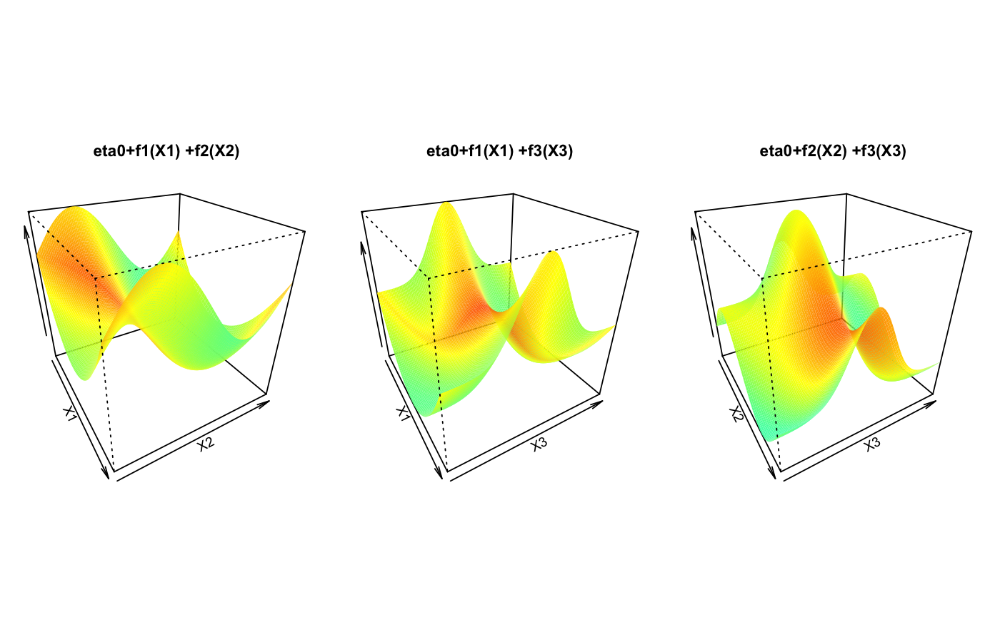
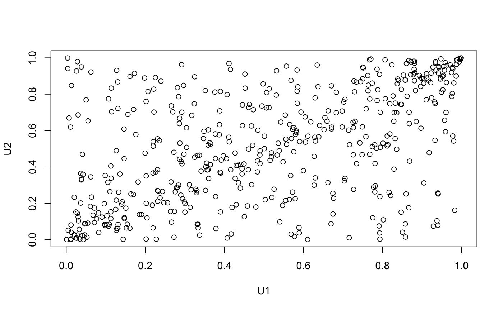
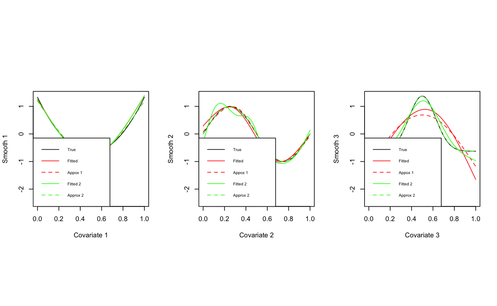

This package implements inference and simulation tools to apply generalized additive models to bivariate dependence structures and vine copulas.
More references in Vatter and Chavez-Demoulin (2015), and Vatter and Nagler (2016).
| Package: | gamCopula |
| Type: | Package |
| Version: | 0.0-1 |
| Date: | 2016-08-03 |
| License: | GPL-3 |
Aas, K., C. Czado, A. Frigessi, and H. Bakken (2009) Pair-copula constructions of multiple dependence. Insurance: Mathematics and Economics 44 (2), 182-198.
Brechmann, E. C., C. Czado, and K. Aas (2012) Truncated regular vines in high dimensions with applications to financial data. Canadian Journal of Statistics 40 (1), 68-85.
Dissmann, J. F., E. C. Brechmann, C. Czado, and D. Kurowicka (2013) Selecting and estimating regular vine copulae and application to financial returns. Computational Statistics & Data Analysis, 59 (1), 52-69.
Vatter, T. and V. Chavez-Demoulin (2015) Generalized Additive Models for Conditional Dependence Structures. Journal of Multivariate Analysis, 141, 147-167.
Vatter, T. and T. Nagler (2016) Generalized additive models for non-simplified pair-copula constructions. http://ssrn.com/abstract=2817949
Wood, S.N. (2004) Stable and efficient multiple smoothing parameter estimation for generalized additive models. Journal of the American Statistical Association, 99, 673-686.
Wood, S.N. (2006) Generalized Additive Models: an introduction with R. Chapman and Hall/CRC.
The present package is heavily relying on the mgcv and VineCopula packages, as it basically extends and mix both of them.
##### A gamBiCop example require(copula) require(mgcv) set.seed(0) ## Simulation parameters (sample size, correlation between covariates, ## Gaussian copula family) n <- 5e2 rho <- 0.5 fam <- 1 ## A calibration surface depending on three variables eta0 <- 1 calib.surf <- list( calib.quad <- function(t, Ti = 0, Tf = 1, b = 8) { Tm <- (Tf - Ti)/2 a <- -(b/3) * (Tf^2 - 3 * Tf * Tm + 3 * Tm^2) return(a + b * (t - Tm)^2)}, calib.sin <- function(t, Ti = 0, Tf = 1, b = 1, f = 1) { a <- b * (1 - 2 * Tf * pi/(f * Tf * pi + cos(2 * f * pi * (Tf - Ti)) - cos(2 * f * pi * Ti))) return((a + b)/2 + (b - a) * sin(2 * f * pi * (t - Ti))/2)}, calib.exp <- function(t, Ti = 0, Tf = 1, b = 2, s = Tf/8) { Tm <- (Tf - Ti)/2 a <- (b * s * sqrt(2 * pi)/Tf) * (pnorm(0, Tm, s) - pnorm(Tf, Tm, s)) return(a + b * exp(-(t - Tm)^2/(2 * s^2)))}) ## Display the calibration surface par(mfrow = c(1, 3), pty = "s", mar = c(1, 1, 4, 1)) u <- seq(0, 1, length.out = 100) sel <- matrix(c(1, 1, 2, 2, 3, 3), ncol = 2) jet.colors <- colorRamp(c("#00007F", "blue", "#007FFF", "cyan", "#7FFF7F", "yellow", "#FF7F00", "red", "#7F0000")) jet <- function(x) rgb(jet.colors(exp(x/3)/(1 + exp(x/3))), maxColorValue = 255) for (k in 1:3) { tmp <- outer(u, u, function(x, y) eta0 + calib.surf[[sel[k,1]]](x) + calib.surf[[sel[k, 2]]](y)) persp(u, u, tmp, border = NA, theta = 60, phi = 30, zlab = "", col = matrix(jet(tmp), nrow = 100), xlab = paste("X", sel[k, 1], sep = ""), ylab = paste("X", sel[k,2], sep = ""), main = paste("eta0+f", sel[k, 1], "(X", sel[k, 1], ") +f",sel[k, 2], "(X", sel[k, 2], ")", sep = "")) }## 3-dimensional matrix X of covariates covariates.distr <- mvdc(normalCopula(rho, dim = 3), c("unif"), list(list(min = 0, max = 1)), marginsIdentical = TRUE) X <- rMvdc(n, covariates.distr) ## U in [0,1]x[0,1] with copula parameter depending on X U <- condBiCopSim(fam, function(x1,x2,x3) {eta0+sum(mapply(function(f,x) f(x), calib.surf, c(x1,x2,x3)))}, X[,1:3], par2 = 6, return.par = TRUE) ## Merge U and X data <- data.frame(U$data,X) names(data) <- c(paste("u",1:2,sep=""),paste("x",1:3,sep="")) ## Display the data dev.off()#> null device #> 1plot(data[, "u1"], data[, "u2"], xlab = "U1", ylab = "U2") ## Model fit with a basis size (arguably) too small ## and unpenalized cubic spines pen <- FALSEbasis0 <- c(3, 4, 4) formula <- ~s(x1, k = basis0[1], bs = "cr", fx = !pen) + s(x2, k = basis0[2], bs = "cr", fx = !pen) + s(x3, k = basis0[3], bs = "cr", fx = !pen) system.time(fit0 <- gamBiCopFit(data, formula, fam))#> user system elapsed #> 0.198 0.010 0.211## Model fit with a better basis size and penalized cubic splines (via min GCV) pen <- TRUE basis1 <- c(3, 10, 10) formula <- ~s(x1, k = basis1[1], bs = "cr", fx = !pen) + s(x2, k = basis1[2], bs = "cr", fx = !pen) + s(x3, k = basis1[3], bs = "cr", fx = !pen) system.time(fit1 <- gamBiCopFit(data, formula, fam))#> user system elapsed #> 0.231 0.008 0.237## Extract the gamBiCop objects and show various methods (res <- sapply(list(fit0,fit1), function(fit){fit$res}))#> [[1]] #> Gaussian copula with tau(z) = (exp(z)-1)/(exp(z)+1) where #> z ~ s(x1, k = basis0[1], bs = "cr", fx = !pen) + s(x2, k = basis0[2], #> bs = "cr", fx = !pen) + s(x3, k = basis0[3], bs = "cr", fx = !pen) #> #> [[2]] #> Gaussian copula with tau(z) = (exp(z)-1)/(exp(z)+1) where #> z ~ s(x1, k = basis1[1], bs = "cr", fx = !pen) + s(x2, k = basis1[2], #> bs = "cr", fx = !pen) + s(x3, k = basis1[3], bs = "cr", fx = !pen) #>metds <- list('logLik'=logLik,'AIC'=AIC,'BIC'=BIC,'EDF'=EDF) lapply(res, function(x) sapply(metds, function(f) f(x)))#> [[1]] #> [[1]]$logLik #> 'log Lik.' 266.8974 (df=9) #> #> [[1]]$AIC #> [1] -515.7948 #> #> [[1]]$BIC #> [1] -477.8633 #> #> [[1]]$EDF #> [1] 1 2 3 3 #> #> #> [[2]] #> [[2]]$logLik #> 'log Lik.' 302.9581 (df=16.24202) #> #> [[2]]$AIC #> [1] -573.4321 #> #> [[2]]$BIC #> [1] -504.9783 #> #> [[2]]$EDF #> [1] 1.000000 1.999178 7.577543 5.665301 #> #>## Comparison between fitted, true smooth and spline approximation for each ## true smooth function for the two basis sizes fitted <- lapply(res, function(x) gamBiCopPredict(x, data.frame(x1=u,x2=u,x3=u), type = "terms")$calib) true <- vector("list", 3) for (i in 1:3) { y <- eta0+calib.surf[[i]](u) true[[i]]$true <- y - eta0 temp <- gam(y ~ s(u, k = basis0[i], bs = "cr", fx = TRUE)) true[[i]]$approx <- predict.gam(temp, type = "terms") temp <- gam(y ~s(u, k = basis1[i], bs = "cr", fx = FALSE)) true[[i]]$approx2 <- predict.gam(temp, type = "terms") } ## Display results par(mfrow = c(1, 3), pty = "s") yy <- range(true, fitted) yy[1] <- yy[1] * 1.5 for(k in 1:3){ plot(u, true[[k]]$true, type = "l", ylim = yy, xlab = paste("Covariate",k), ylab = paste("Smooth",k)) lines(u, true[[k]]$approx, col = "red", lty = 2) lines(u, fitted[[1]][, k], col = "red") lines(u, fitted[[2]][, k], col = "green") lines(u, true[[k]]$approx2, col = "green", lty = 2) legend("bottomleft", cex = 0.6, lty = c(1, 1, 2, 1, 2), c("True", "Fitted", "Appox 1", "Fitted 2", "Approx 2"), col = c("black", "red", "red", "green", "green")) }##### A gamVine example set.seed(0) ## Simulation parameters # Sample size n <- 1e3 # Copula families familyset <- c(1:2,301:304,401:404) # Define a 4-dimensional R-vine tree structure matrix d <- 4 Matrix <- c(2,3,4,1,0,3,4,1,0,0,4,1,0,0,0,1) Matrix <- matrix(Matrix,d,d) nnames <- paste("X", 1:d, sep = "") ## A function factory eta0 <- 1 calib.surf <- list( calib.quad <- function(t, Ti = 0, Tf = 1, b = 8) { Tm <- (Tf - Ti)/2 a <- -(b/3) * (Tf^2 - 3 * Tf * Tm + 3 * Tm^2) return(a + b * (t - Tm)^2)}, calib.sin <- function(t, Ti = 0, Tf = 1, b = 1, f = 1) { a <- b * (1 - 2 * Tf * pi/(f * Tf * pi + cos(2 * f * pi * (Tf - Ti)) - cos(2 * f * pi * Ti))) return((a + b)/2 + (b - a) * sin(2 * f * pi * (t - Ti))/2)}, calib.exp <- function(t, Ti = 0, Tf = 1, b = 2, s = Tf/8) { Tm <- (Tf - Ti)/2 a <- (b * s * sqrt(2 * pi)/Tf) * (pnorm(0, Tm, s) - pnorm(Tf, Tm, s)) return(a + b * exp(-(t - Tm)^2/(2 * s^2)))}) ## Create the model # Define gam-vine model list count <- 1 model <- vector(mode = "list", length = d*(d-1)/2) sel <- seq(d,d^2-d, by = d) # First tree for (i in 1:(d-1)) { # Select a copula family family <- sample(familyset, 1) model[[count]]$family <- family # Use the canonical link and a randomly generated parameter if (is.element(family,c(1,2))) { model[[count]]$par <- tanh(rnorm(1)/2) if (family == 2) { model[[count]]$par2 <- 2+exp(rnorm(1)) } } else { if (is.element(family,c(401:404))) { rr <- rnorm(1) model[[count]]$par <- sign(rr)*(1+abs(rr)) } else { model[[count]]$par <- rnorm(1) } model[[count]]$par2 <- 0 } count <- count + 1 } # A dummy dataset data <- data.frame(u1 = runif(1e2), u2 = runif(1e2), matrix(runif(1e2*d),1e2,d)) # Trees 2 to (d-1) for(j in 2:(d-1)){ for(i in 1:(d-j)){ # Select a copula family family <- sample(familyset, 1) # Select the conditiong set and create a model formula cond <- nnames[sort(Matrix[(d-j+2):d,i])] tmpform <- paste("~",paste(paste("s(", cond, ", k=10, bs='cr')", sep = ""), collapse=" + ")) l <- length(cond) temp <- sample(3, l, replace = TRUE) # Spline approximation of the true function m <- 1e2 x <- matrix(seq(0,1,length.out=m), nrow = m, ncol = 1) if(l != 1){ tmp.fct <- paste("function(x){eta0+", paste(sapply(1:l, function(x) paste("calib.surf[[",temp[x],"]](x[",x,"])", sep="")), collapse="+"),"}",sep="") tmp.fct <- eval(parse(text = tmp.fct)) x <- eval(parse(text = paste0("expand.grid(", paste0(rep("x",l), collapse = ","),")", collapse = ""))) y <- apply(x,1,tmp.fct) }else{ tmp.fct <- function(x) eta0+calib.surf[[temp]](x) colnames(x) <- cond y <- tmp.fct(x) } # Estimate the gam model form <- as.formula(paste0("y", tmpform)) dd <- data.frame(y, x) names(dd) <- c("y", cond) b <- gam(form, data = dd) #plot(x[,1],(y-fitted(b))/y) # Create a dummy gamBiCop object tmp <- gamBiCopFit(data = data, formula = form, family = 1, n.iters = 1)$res # Update the copula family and the model coefficients attr(tmp, "model")$coefficients <- coefficients(b) attr(tmp, "model")$smooth <- b$smooth attr(tmp, "family") <- family if (family == 2) { attr(tmp, "par2") <- 2+exp(rnorm(1)) } model[[count]] <- tmp count <- count+1 } } # Create the gamVineCopula object GVC <- gamVine(Matrix=Matrix,model = model,names=nnames) print(GVC)#> GAM-Vine matrix: #> [,1] [,2] [,3] [,4] #> [1,] 2 0 0 0 #> [2,] 3 3 0 0 #> [3,] 4 4 4 0 #> [4,] 1 1 1 1 #> #> Where #> 1 <-> X1 #> 2 <-> X2 #> 3 <-> X3 #> 4 <-> X4 #> #> Tree 1: #> X2,X1: Gumbel type 3 (survival and 90 degrees rotated) #> X3,X1: Clayton type 4 (survival and 270 degrees rotated) #> X4,X1: Gumbel type 3 (survival and 90 degrees rotated) #> #> Tree 2: #> X2,X4|X1 : Gumbel type 4 (survival and 270 degrees rotated) copula with tau(z) = (exp(z)-1)/(exp(z)+1) where #> z ~ s(X1, k = 10, bs = "cr") #> X3,X4|X1 : Gumbel type 4 (survival and 270 degrees rotated) copula with tau(z) = (exp(z)-1)/(exp(z)+1) where #> z ~ s(X1, k = 10, bs = "cr") #> #> Tree 3: #> X2,X3|X4,X1 : Clayton type 4 (survival and 270 degrees rotated) copula with tau(z) = (exp(z)-1)/(exp(z)+1) where #> z ~ s(X1, k = 10, bs = "cr") + s(X4, k = 10, bs = "cr")# NOT RUN { ## Simulate and fit the model sim <- gamVineSimulate(n, GVC) fitGVC <- gamVineSeqFit(sim, GVC, verbose = TRUE) fitGVC2 <- gamVineCopSelect(sim, Matrix, verbose = TRUE) ## Plot the results par(mfrow=c(3,4)) plot(GVC, ylim = c(-2.5,2.5)) plot(fitGVC, ylim = c(-2.5,2.5)) plot(fitGVC2, ylim = c(-2.5,2.5)) # }